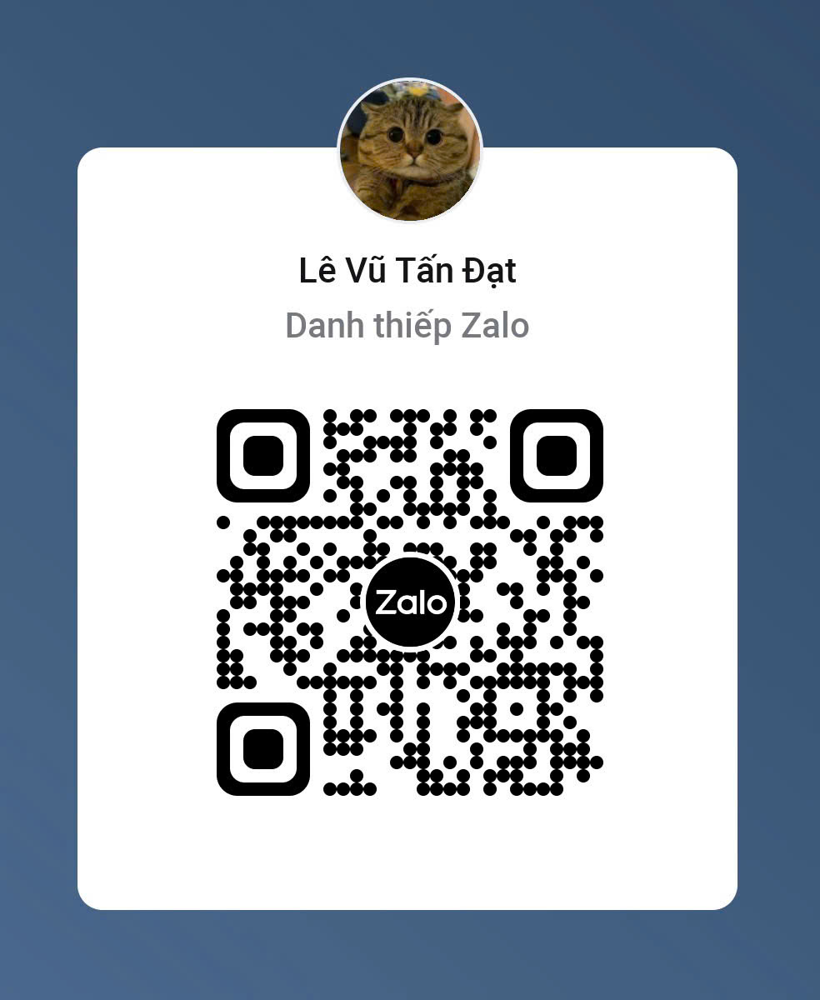

Lê Vũ Tấn Đạt
IT Support với hơn 3 năm kinh nghiệm quản trị và vận hành hệ thống IT doanh nghiệp. Có kinh nghiệm thực chiến về network, NAS Synology, Windows Server, camera, thiết bị văn phòng và xử lý sự cố cho môi trường nhiều người dùng.
IT Help Desk
Specialized in enterprise support, infrastructure maintenance, and fast troubleshooting.
Giới thiệu bản thân
Vận hành ổn định là ưu tiên hàng đầu
Tôi tập trung vào việc duy trì hệ thống hoạt động ổn định, phản hồi nhanh khi có sự cố và đảm bảo trải nghiệm người dùng nội bộ luôn mượt mà.
Mục tiêu nghề nghiệp
Mong muốn phát triển chuyên sâu về System Administration và Network, từng bước nâng cao khả năng triển khai, bảo trì và tối ưu hạ tầng IT doanh nghiệp.
Kinh nghiệm làm việc
IT Help Desk • Timber Industries
02/2024 - 02/2026NAS Synology, Windows Server 2019 (DHCP), Cisco/Zyxel Switch, KBvision CCTV, printer & PC troubleshooting.
IT Help Desk • EMASI Vạn Phúc
06/2022 - 01/2023Quản lý mạng nội bộ, setup camera, thiết bị văn phòng, hỗ trợ POS, bảo trì server room và vendor support.
IT Intern • Titan Technology Corporation
02/2021 - 05/2021Hỗ trợ cài đặt hệ điều hành, bảo trì máy tính/laptop, lắp đặt camera và triển khai thiết bị IT doanh nghiệp.
Dự án nổi bật
Synology NAS Administration
Quản lý user, permission, backup, thay ổ đĩa và vận hành NAS cho môi trường doanh nghiệp.
Enterprise Network Support
Vận hành switch Cisco/Zyxel, VLAN cơ bản, LAN troubleshooting và hỗ trợ hệ thống nhiều người dùng.
KBvision CCTV Deployment
Setup camera, add đầu ghi, bảo trì và giám sát hệ thống camera cho doanh nghiệp / trường học.
Kỹ năng chuyên môn
Điểm nổi bật
System Stability
Hỗ trợ vận hành hệ thống IT ổn định cho môi trường doanh nghiệp và xử lý sự cố nhanh.
Fast Support Process
Rút ngắn thời gian hỗ trợ người dùng thông qua quy trình xử lý và phản hồi hiệu quả.
Kết nối với tôi
Sẵn sàng cho cơ hội mới trong mảng IT Support / System Administration / Network.

Quét mã để kết nối Zalo